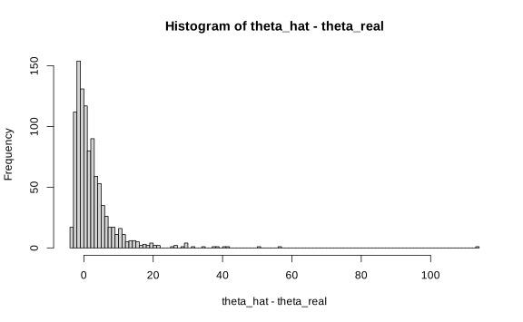
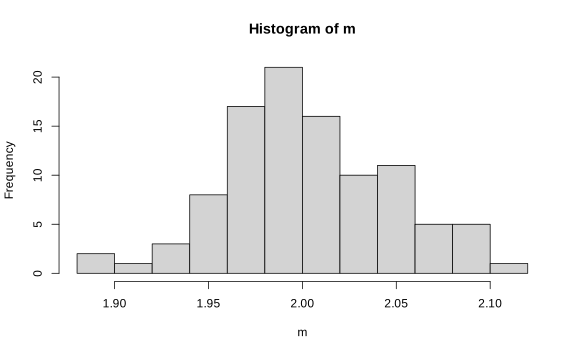
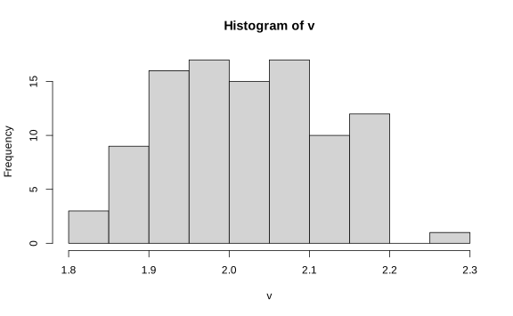
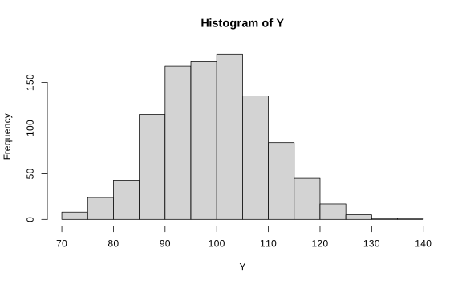
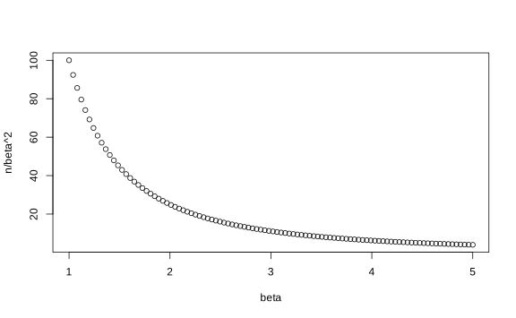
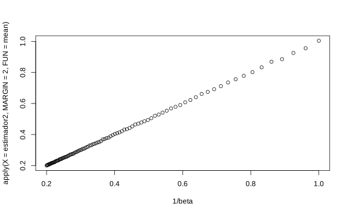
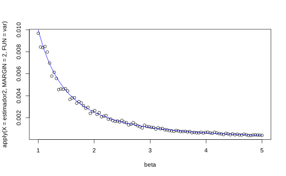

Capítulo 9 Estimación insesgada
9.1 Estimadores insesgados
Definición. Un estimador \(\delta(x)\) es un estimador insesgado de \(g(\theta)\) si \(\mathbb E_{\theta}[\delta(x)] = g(\theta)\), \(\forall \theta\). A \(\mathbb E_{\theta}[\delta(x)] - g(\theta)\) se le denomina sesgo.
Ejemplo. Si \(X_1,\dots, X_n \overset{i.i.d}{\sim} F_\theta\), \(\mu = \mathbb E[X_1]\), entonces
\[\mathbb E[\bar X_n] = \dfrac 1n \sum_{i=1}^n\mathbb E(X_i) = \mu\]
\(\bar X_n\) es estimador insesgado de \(\mu\).
Ejemplo. \(X_1,X_2,X_3 \overset{i.i.d}{\sim} \text{Exp}(\theta)\). El MLE de \(\theta\) es
\[\hat\theta = \dfrac 3T = \dfrac 3{\sum_{i=1}^{3}X_i}\]
¿Será \(\hat\theta\) un estimador insesgado?
theta_real <- 5
X <- matrix(rexp(n = 1000 * 3, rate = theta_real), ncol = 3)
T <- apply(X = X, MARGIN = 1, FUN = sum)
theta_hat <- 3 / T
hist(theta_hat - theta_real, breaks = 100)
Teoricamente podemos ver que
\[\mathbb E[\hat\theta] = \mathbb E\bigg[\dfrac 3T\bigg]= 3\mathbb E\bigg[\dfrac 1T\bigg], \quad T\sim \Gamma(3,\theta)\]
Como \(\dfrac 1T \sim \text{Gamma Inversa}(3,\theta)\)1, se tiene que
\[\mathbb E\bigg[\dfrac 1T\bigg] = \dfrac{\theta}2 \implies \mathbb E[\hat \theta] =\dfrac{3\theta}2 \neq \theta\]
Por lo que \(\hat \theta\) es un estimador sesgado, con sesgo \[\text{sesgo}(\hat\theta) = \dfrac{3\theta}{2} -\theta = \dfrac \theta 2.\]
Si por ejemplo \(\theta=5\), entonces la diferencia debería ser aproximadamente \(\dfrac 5 2\).
## [1] 2.515532Si \(U = \dfrac {2\hat\theta}{3} = \dfrac 23 \cdot \dfrac{3}{T} = \dfrac 2T\), \[\mathbb E[U] = \dfrac 23 \mathbb E(\hat\theta) =\dfrac 23 \cdot \dfrac 32 \theta.\]
Entonces \(U\) es un estimador insesgado.
## [1] 0.01035435Importante: El caso ideal es encontrar estimadores en donde \(\text{Var}(\delta(x))\to 0\) y además que sean insesgados.
¿Cómo controlar sesgo y varianza?
Defina la siguiente cantidad
\[\begin{align*} \text{Sesgo}^2(\delta(x))+\text{Var}(\delta(x)) & = (\mathbb E_\theta[\delta(x)]-\theta)^2 + \mathbb E[[\delta(x)-\mathbb E[\delta(x)]]^2]\\ & =\mathbb E[ \underbrace{(\mathbb E_\theta[\delta(x)]-\theta)^2}_{A^2} + \underbrace{[\delta(x)-\mathbb E[\delta(x)]]^2}_{B^2}]\\ & = \mathbb E[A^2+B^2 - 2(\underset{=0}{\mathbb E[\delta(x)]-\theta)(\delta(x)-\mathbb E[\delta(x)]})]\\ & = \mathbb E[(\mathbb E[\delta(x)]-\theta - \mathbb E[\delta(x)] + \delta(x))^2]\\ & = \mathbb E[(\delta(x)-\theta)^2] = MSE(\delta(x)) * [ ] \end{align*}\]
Si \(\delta\) tiene varianza finita, entonces definimos el error cuadrático medio (MSE) de \(\delta(x)\) como,
\[MSE_{\theta}(\delta(x)) =\text{Sesgo}^2(\delta(x)) + \text{Var}(\delta(x)).\]
Ejemplo. Comparar \(\hat\theta\) y \(U =\dfrac 2T\) en términos del MSE.
Dado que \(\text{Var}\left(\dfrac 1T\right) = \dfrac{\theta^2}4\),2 se tiene
- \(\mathrm{MSE}(U) = \text{Var}\left(\dfrac 2T\right) = 4\dfrac{\theta^2}4 = \theta^2\).
## [1] 21.90015- \(\mathrm{MSE}(\hat\theta) = (\text{Sesgo}(\hat\theta))^2+\text{Var}\left(\dfrac 3T\right) = \dfrac{\theta^2}{4}+\dfrac{9\theta^2}{4} = \dfrac{5\theta^2}{2}\).
## [1] 55.603\(U\) es mejor estimador en términos de MSE que el \(\hat\theta\).
OJO: El estimado bayesiano es \(\theta_{Bayes} = \dfrac{4}{2+T}\) y este es un poco más eficiente que los otros dos.
## [1] 11.832039.2 Estimador insesgado de la varianza
Teorema. Si \(X_1,\dots, X_n \sim F_{\theta}\) con varianza finita y \(g(\theta) = \text{Var}(X_1)\) entonces \[\hat\sigma_1^2 = \dfrac{1}{n-1}\sum(X_i-\bar X_n)^2\] es un estimador insesgado de \(\sigma^2\).
Prueba. Considere que
\[\begin{equation} \sum_{i=1}^{n}\left(X_{i}-\mu\right)^{2}=\sum_{i=1}^{n}\left(X_{i}-\bar{X}_{n}\right)^{2}+n\left(\bar{X}_{n}-\mu\right)^{2} \end{equation}\]
Entonces si \(\sigma_0 ^{2} = \dfrac 1n \sum_{i=1}^{n}\left(X_{i}-\bar{X}_{n}\right)^{2}\)
\[\mathbb E[\hat\sigma_0^2] = \mathbb E \bigg[ \dfrac {\sum_{i=1}^{n}\left(X_{i}-\bar{X}_{n}\right)^{2}}n \bigg] = \mathbb E \bigg[ \dfrac 1n \sum(X_i-\mu)^2\bigg] - \mathbb E[(\bar X_n-\mu)^2] = \sigma^2-\dfrac{\sigma^2}n = \left(\dfrac{n-1}n\right)\sigma^2.\]
Para que \(\hat\sigma_0^2\) sea insesgado, \[\mathbb E \bigg[\dfrac n{n-1}\hat\sigma_0^2\bigg] = \mathbb E[\hat\sigma_1] = \sigma^2.\]
Entonces \(\hat\sigma_1\) es estimador insesgado de \(\sigma^2\).
Ejemplo. Sean \(X_1,\dots,X_n \overset{i.i.d}{\sim}\text{Poi}(\theta)\). \(\mathbb E(X_i) = \text{Var}(X_i) = \theta\). Estimadores insesgados de \(\theta\) son:
\(\bar X_n\).
\(\hat \sigma_1^2\).
Si \(\alpha \in (0,1)\), \(T = \alpha\bar X_n + (1-\alpha)\hat\sigma_1^2\) también es un estimador insesgado.
X <- matrix(rpois(n = 1000 * 100, lambda = 2), nrow = 100)
m <- apply(X, 1, mean)
v <- apply(X, 1, var)
a <- apply(X, 1, function(x, alpha) {
alpha * mean(x) + (1 - alpha) * var(x)
}, alpha = 10)
hist(m)


Ejemplo. (Normal) ¿Cuál estimador tiene menor MSE, \(\hat\sigma^2_0\) o \(\hat\sigma^2_1\)?
Defina \(T_c = c\sum_{i=1}^{n}\left(X_{i}-\bar{X}_{n}\right)^{2}\). Si \(c = 1/n\), \(T_c = \hat\sigma_0\) y si \(c = 1/(n-1)\), \(T_c = \hat\sigma_1\). De esta manera,
\[MSE_{\sigma^2}(T_c) = \mathbb E[(T_c-\sigma^2)^2] =(\mathbb E(T_c)-\sigma^2)^2+\text{Var}(T_c).\]
\[\begin{align*} \mathbb E[T_c] &= c\mathbb E[\sum_{i=1}^{n}\left(X_{i}-\bar{X}_{n}\right)^{2}] \\ &= c(n-1)\mathbb E\bigg[\dfrac{\sum_{i=1}^{n}\left(X_{i}-\bar{X}_{n}\right)^{2}}{n-1}\bigg] \\ &= c(n-1)\sigma^2. \end{align*}\]
\[\begin{align*} \text{Var}(T_c) &= c^2\text{Var}(\sum_{i=1}^{n}\left(X_{i}-\bar{X}_{n}\right)^{2}) \\ &= c^2\text{Var}\Bigg(\sigma^2\underbrace{\sum\dfrac{(X_i-\bar X_n)}{\sigma^2}}_{\sim\chi^2_{n-1}}\Bigg) \\ &= 2c^2\sigma^4(n-1). \end{align*}\]
Entonces
\[\mathrm{MSE}_{\sigma^2}(T_c) = [c(n-1)\sigma^2-\sigma^2]^2+2c^2\sigma^4(n-1) = [[c(n-1)-1]^2+2c^2(n-1)]\sigma^4.\]
Optimizando,
\[\min_c \mathrm{MSE}(T_c) = \min_c[(n^2-1)c^2-2(n-1)c+1],\]
se encuentra que \(\hat c = \dfrac 1{n+1}\). Así, \(T_{\frac{1}{n+1}} = \dfrac{\sum_{i=1}^{n}\left(X_{i}-\bar{X}_{n}\right)^{2}}{n+1}\) es el mejor estimador de \(\sigma^2\) en el sentido de MSE. Aunque se puede demostrar que este estimador es inadmisible.
Ejercicio. Calcule el MSE de \(\hat\sigma_0^2\) y \(\hat\sigma_1^2\) y compare los resultados.
9.3 Información de Fisher
¿Cómo cuantificar la información de un estadístico?
Sea \(X\sim f(x|\theta)\), \(\theta \in \Omega \subset \mathbb R\) parámetro fijo.
Supuesto 1: para cada \(x \in \mathcal X\) (espacio muestral de \(X\)) \(f(x|\theta)> 0\) \(\forall \theta \in \Omega\). Esto quiere decir que la imagen de la variable aleatoria no puede depender de \(\theta\).
Supuesto 2: \(f(x|\theta)\) es dos veces diferenciable.
Supuesto 3: \(\dfrac d{d\theta}\int_{\mathcal X}f(x|\theta)dx = \int_{\mathcal X}\dfrac d{d\theta}f(x|\theta)dx\).
Ejemplo. \(\text{Unif}[0,\theta]\), \(f(x|\theta) = 1_{(0,\theta)}(x)\). No aplica el supuesto, ya que si \(x>\theta\), \(f(x|\theta) = 0\). En otras palabras el dominio de la distribución no debe depender de \(\theta\).
Definición. Se define la función Score:
\[\lambda(x|\theta)=\ln f(x|\theta)\]
cuyas derivadas son
\[\lambda'(x|\theta) = \dfrac \partial{\partial \theta}\ln f(x|\theta)\] \[\lambda''(x|\theta) = \dfrac {\partial^2}{\partial \theta^2}\ln f(x|\theta)\]
Definición. Si \(X\) y \(f(x|\theta)\) satisfacen los supuestos anteriores, la información de Fisher (\(I(\theta)\)) de \(X\) es \[I(\theta) =\mathbb E[(\lambda'(x|\theta))^2]\] donde la esperanza es integral o suma, dependiendo de \(X\).
Por ejemplo si \(f(x\vert\theta)\) \[\begin{equation} I(\theta)=\int_{\mathcal{X}}\left[\lambda^{\prime}(x \mid \theta)\right]^{2} f(x \mid \theta) d x \end{equation}\]
Teorema. Bajo las condiciones anteriores, y suponiendo que las dos derivadas de \(\int_{\mathcal X}f(x|\theta)dx\) con respecto a \(\theta\) (Supuesto 3) se pueden calcular al intercambiar el orden de integración y derivación. Entonces
\[I(\theta) = -\mathbb E_{\theta}[\lambda''(x|\theta)] = \text{Var}[\lambda'(x|\theta)]\].
Prueba:
\[\begin{align*} \mathbb E[\lambda'(x|\theta)] & = \int_{\mathcal X}\lambda'(x|\theta)f(x|\theta)dx \\ & = \int_{\mathcal X} \dfrac{f'(x|\theta)}{f(x|\theta)}f(x|\theta)dx \\ & = \int_{\mathcal X}f'(x|\theta)dx \\ & = \dfrac d{d\theta}\int_{\mathcal X}f(x|\theta)dx \quad \text{(por supuesto 3.)} \\ & = \dfrac d{d\theta}1 = 0 \end{align*}\]
En consecuencia, \[\text{Var}(\lambda'(x|\theta)) = \mathbb E[(\lambda'(x|\theta))^2]-0 = I(\theta).\]
Además, \[\lambda''(x|\theta)= \left(\dfrac{f'(x|\theta)}{f(x|\theta)}\right)' = \dfrac{f(x|\theta)f''(x|\theta)-f'(x|\theta)^2}{f^2(x|\theta)} =\dfrac{f''(x|\theta)}{f(x|\theta)} - (\lambda'(x|\theta))^2 \]
Note que (por los supuestos 2 y 3),
\[\begin{align*} \mathbb E\bigg[\dfrac{f''(x|\theta)}{f(x|\theta)} \bigg] & = \int_{\mathcal X}\dfrac{f''(x|\theta)}{f(x|\theta)} f(x|\theta)dx \\ &=\dfrac{d}{d\theta}\bigg[\dfrac{d}{d\theta}\int_{\mathcal X}f(x|\theta)dx\bigg]\\ & = \dfrac{d}{d\theta}\bigg[\dfrac{d}{d\theta}1\bigg] = 0 \end{align*}\]
Entonces, \[\mathbb E[\lambda''(x|\theta)] =\mathbb E\bigg[\dfrac{f''(x|\theta)}{f(x|\theta)} \bigg] - \mathbb E[(\lambda'(x|\theta))^2] = -I(\theta). \]
Se concluye, además, que \(\lambda'(x|\theta)\) es centrada y su varianza es \(I(\theta)\).
RESULTADO IMPORTANTE
Si tenemos \(\lambda(x\vert \theta) = \ln f(x\vert \theta)\), entonces tenemos los siguientes resulados
- \(\lambda'(x\vert \theta)\) es una variable aleatoria.
- \(\mathbb{E}[\lambda'(x\vert \theta)] =0\).
- \(\mathrm{Var}[\lambda'(x\vert \theta)] = - \mathbb E[\lambda''(x|\theta)] = I(\theta)\). A esta cantidad se le conoce como la información de Fisher.
Ejemplo. Suponga que \(X\sim \text{Bernoulli}(p)\).
\(f(x|p) = p^x(1-p)^{1-x}\), \(x=0,1\) satisface supuesto 1.
\(\displaystyle\int_{\mathcal X}f(x|p)dx \;``=" f(0|p)+f(1|p)\) satisface el supuesto 3.
Entonces,
\(\lambda(x|p) = \ln[p^x(1-p)^{1-x}] = x\ln p + (1-x)\ln(1-p)\).
\(\lambda'(x|p) = \dfrac xp-\dfrac{1-x}{1-p}\).
\(\lambda''(x|p) = -\dfrac x{p^2}-\dfrac{1-x}{(1-p)^2}\).
De esta manera, \[I(p) = \mathbb E\bigg[\dfrac xp + \dfrac{1-x}{(1-p)^2}\bigg] = \dfrac p{p^2}+\dfrac{1-p}{(1-p)^2} = \dfrac 1{p(1-p)} = \dfrac 1{\text{Var}(X)}.\]
Ejemplo. \(X\sim N(\mu,\sigma^2)\), \(\mu\) desconocida, \(\sigma^2\) conocida. \[f(x|\mu) = \dfrac{1}{\sqrt{2\pi\sigma^2}}\exp\left(-\dfrac 1{2\sigma^2}(x-\mu)^2\right)\]
Vea que \[\begin{align*} \dfrac d{du}\int_{\mathbb R} f(x|\mu)dx & = \int_{\mathbb R}f'(x|\mu)dx\\ & = \int_{\mathbb R} -\dfrac 1{\sqrt{2\pi\sigma^2}}\dfrac {2(x-\mu)^2}{2\sigma^2} dx\\ & = -\dfrac 1\sigma \underbrace{\int_{\mathbb R}\dfrac{u}{\sqrt{2\pi}}e^{-\frac{u}2}du}_{\mathbb E[N(0,1)]} = 0 \quad \text{usando el cambio de variable } \dfrac{x-\mu}\sigma \end{align*}\]
por lo que cumple el tercer supuesto.
Entonces
\(\lambda(x|\mu) = \dfrac 12 \ln (2\pi\sigma^2)-\dfrac 1{2\sigma^2}(x-\mu)^2\).
\(\lambda'(x|\mu) = \dfrac 1{2\sigma^2}2(x-\mu) = \dfrac{x-\mu}{\sigma^2}\).
\(\lambda''(x-\mu) = -\dfrac 1{\sigma^2}\).
Por lo que
\[I(\mu) = -\mathbb E[\lambda''(x|\mu)] = \dfrac{1}{\text{Var}(X)}\]
Definición. Suponga que \(X = (X_1,\dots,X_n)\) muestra de \(f(x|\theta)\) donde \(f\) satisface las condiciones anteriores. Defina \(\lambda_n = \ln f_n(x|\theta)\). La información de Fisher de \(X\) es
\[I_n(\theta) = \mathbb E[(\lambda'(x|\theta))^2] = - \mathbb E[\lambda''_n(x|\theta)].\]
Nota. Observe que \[\lambda_n(x|\theta) = \ln f_n(x|\theta) = \sum_{i=1}^{n} \lambda(X_i|\theta)\] lo que implica que \[\lambda''_n(x|\theta) = \sum_{i=1}^n\lambda(X_i|\theta).\] De esta forma, \[I_n(\theta) = -\mathbb E[\lambda''(x|\theta)] = - \sum_{i=1}^n\mathbb E[\lambda''(X_i|\theta)] = nI(\theta).\]
Ejemplo. Suponga que una compañía quiere conocer como se comportan sus clientes en sus tiendas. Hay dos propuestas para este modelo
Un modelo Poisson de parámetro \(t\theta\) (\(t\) es cualquier valor) para determinar la tasa promedio de llegada de clientes. \(Y\sim \text{Poisson}(\theta t)\).
Un modelo donde cada cliente es una v.a. exponencial con tasa de llegada \(\theta\) y al final se sumará todas las variables para obtener una \(\mathrm{Gamma}(n,\theta)\). \(X\sim \sum_{i=1}^{n}\text{Exp}(\theta) = \Gamma(n,\theta)\)
El tiempo de llegada de cada cliente es independiente.
¿Cuál variable contiene más información de \(\theta\) \(X\) o \(Y\)?
Solución:
Para \(Y\),
\(f(y|\theta) = e^{-t\theta}\dfrac{(t\theta)^y}{y!}\).
\(\lambda(y|\theta) = t\theta + y\ln (t\theta) - \ln y!\).
\(\lambda'(y|\theta) = -t+\dfrac{ty}{t\theta}.\)
\(\lambda''(y|\theta) = -\dfrac y{\theta^2}\).
Entonces, \[I_Y(\theta) =-\mathbb E[ \lambda''(y|\theta)] = \dfrac{\mathbb E[Y]}{\theta^2} = \dfrac{t}\theta.\]
Como ejercicio, verifique que \(I_X(\theta) = \dfrac n{\theta^2}\).
Ambas variables tienen la misma información si
\[I_Y(\theta) = I_X(\theta) \implies \dfrac t\theta = \dfrac n{\theta^2} \implies n = \dfrac{\theta t}{\theta ^{2}} = \dfrac t\theta.\]
A partir de este ejercicio vamos a hacer un pequeño ejemplo de simulación.
Suponga que \(t\) es el tiempo que se quiere medir la cantidad de clientes (minutos), \(\theta\) es la cantidad de clientes por minuto y \(n\) es el número de clientes que entran.
t <- 20
theta <- 5
n <- t / theta
Y <- rpois(n = 1000, lambda = t * theta)
X <- rgamma(n = 1000, shape = n, rate = theta)Ojo que según lo estimado ambas informaciones de Fisher debería dar aproximadamente igualdad.
Para \(Y\) tenemos que
## [1] 3.99068Para \(X\) por otro lado la información de Fisher es constante (¿Por qué?)
## [1] 0.16Entonces bajo este criterio, ambas variables contienen la misma información, aunque modelen el problema desde ópticas diferentes.
El proceso \(Y\) (Poisson) modela cuántas personas en total entran a la tienda en 20 minutos, asumiendo una tasa de entrada de 5 personas por minuto.

El proceso \(X\) (Gamma) modela cuánto tiempo se debe esperar para que 4 personas entren a la tienda, asumiendo una tasa de entrada de 5 por minuto.

Ejercicio: Basado en los valores de la simulación, proponga dos valores de \(t\) para que
- \(X\) tenga más información que \(Y\).
- \(Y\) tenga más información que \(X\).
9.4 Desigualdad de Cramer-Rao
Teorema. Si \(X = (X_1,\dots, X_n)\) muestra de \(f(x|\theta)\). Todos los supuestos anteriores son válidos para \(f\). Sea \(T = r(X)\) un estadístico con varianza finita. Sea \(m(\theta) = \mathbb E_{\theta}[T]\) y asuma que \(m\) es diferenciable. Entonces: \[\text{Var}_\theta(T)\geq \dfrac{[m'(\theta)]^2}{I_n(\theta)} =\dfrac{[m'(\theta)]^2}{nI(\theta)} .\]
La igualdad se da si y solo si existen funciones \(u(\theta)\) y \(v(\theta)\) que solo dependen de \(\theta\) tales que \[T = u(\theta)\lambda_n'(x|\theta) + v(\theta).\]
Prueba. Para el caso univariado: \[\int_{\mathcal X}f'(x|\theta)dx = 0.\]
Para el caso multivariado:
\[\begin{align*} \int_{\mathcal X^n}f'_n(x|\theta)dx_1\cdots dx_n & =\int_{\mathcal X^n}[f(x_1|\theta)\cdots f(x_n|\theta)]'dx_1\cdots dx_n \\ & = \dfrac d{d\theta} \int_{\mathcal X^n}f(x_1|\theta)\cdots f(x_n|\theta)dx_1\cdots dx_n \\ &= \dfrac d{d\theta} 1 \\ &= 0. \end{align*}\]
Entonces
\[\mathbb E[\lambda_n'(X|\theta)] = \int_{\mathcal X^n}\dfrac{f'_n(x|\theta)}{f(x|\theta)} f_{n}(x\vert \theta)dx_1\cdots dx_n = 0\]
Por lo tanto,
Ahora \[\begin{align*} \operatorname{Cov}_{\theta}\left[T, \lambda_{n}^{\prime}(\boldsymbol{X} \mid \theta)\right] \\ &=E_{\theta}\left[T \lambda_{n}^{\prime}(\boldsymbol{X} \mid \theta)\right] \\ &=\int_{\mathcal{X}^n} \ldots \int_{\mathcal{X}^n} r(\boldsymbol{x}) \lambda_{n}^{\prime}(\boldsymbol{x} \mid \theta) f_{n}(\boldsymbol{x} \mid \theta) d x_{1} \ldots d x_{n} \\ & =\int_{\mathcal X^n}r(x)\dfrac{f'_n(x|\theta)}{f_n(x|\theta)}f_n(x|\theta)dx_1\cdots dx_n\\ &=\int_{\mathcal{X}^n} \ldots \int_{\mathcal{X}^n} r(\boldsymbol{x}) f_{n}^{\prime}(\boldsymbol{x} \mid \theta) d x_{1} \ldots d x_{n} \end{align*}\]
Escriba la expresión
\[\begin{equation*} m(\theta)=\int_{\mathcal{X}^n} \ldots \int_{S} r(\boldsymbol{x}) f_{n}(\boldsymbol{x} \mid \theta) d x_{1} \ldots d x_{n} \end{equation*}\]
Usando el supuesto de intercabio de integrales, tenemos que \[\begin{equation*} m^{\prime}(\theta)=\int_{\mathcal{X}^n} \ldots \int_{S} r(\boldsymbol{x}) f_{n}^{\prime}(\boldsymbol{x} \mid \theta) d x_{1} \ldots d x_{n} \end{equation*}\]
Entonces tenemos que
\[\begin{align*} \text{Cov}[T,\lambda_n'(X|\theta)] & = \dfrac d{d\theta}\int_{\mathcal X^n}r(x)f_n(x|\theta)dx_1\cdots dx_n\\ & = \dfrac{d}{d\theta}\mathbb E_\theta[r(X)] = \dfrac{d}{d\theta}E_\theta[T] = m'(\theta) \end{align*}\]
Considere el coeficiente de correlación \[\rho = \dfrac{\text{Cov}[T,\lambda_n'(X|\theta)] }{\sqrt{\text{Var}(T)}\sqrt{\text{Var}(\lambda_n'(X|\theta))}}.\]
Dado que \(|p|\leq 1 \implies \rho^2 \leq 1\), se tiene que
\[\text{Cov}[T,\lambda_n'(X|\theta)]^2 \leq \sqrt{\text{Var}(T)}\sqrt{\text{Var}(\lambda_n'(X|\theta))} \implies [m'(\theta)]^2 \leq \text{Var}(T) I_n(\theta). \] Entonces \(\text{Var}(T)\geq \dfrac{[m'(\theta)]^2 }{I_n(\theta)}\).
Caso particular. Si \(T\) es un estimador insesgado de \(\theta\), entonces \(\text{Var}_\theta(T)\geq \dfrac{1 }{I_n(\theta)}\).
Ejemplo. \(X_1,\dots, X_n \sim \text{Exp}(\beta)\), \(n>2\).
\(f(x|\beta) = \beta e^{-\beta x}\), \(x>0\).
\(\lambda(x|\beta) = \ln f(x|\beta) = \ln \beta -\beta x\).
\(\lambda'(x|\beta) = \dfrac 1\beta -x.\)
\(\lambda'' = -\dfrac 1{\beta^2}\).
Vea que \[1 = \int_{0}^\infty \beta e^{-\beta x}dx = \lim_{u\to \infty}F(u) = \lim_{u\to \infty}[1-e^{-\beta u}]\]
y el supuesto 3 se puede verificar por la diferenciabilidad de \(1-e^{-\beta u}\).
Así, \[I(\beta) = -\mathbb E[\lambda''(x|\beta)] = \dfrac 1{\beta^2}, \quad I_n(\beta) = \dfrac{n}{\beta^2}.\]
Por ejemplo generemos una secuencia de valores de \(\beta\) de 1 hasta 5 para observar el comportamiento de su información de Fisher.
beta <- seq(1, 5, length.out = 100)
n <- 100
lista_muestras <- lapply(
X = beta,
FUN = function(b) {
matrix(rexp(n = n * 500, rate = b), nrow = 500)
}
)
plot(beta, n / beta^2)Considere el estadístico \(T = \dfrac{n-1}{\sum_{i=1}^n X_i}\) es un estimador insesgado de \(\beta\). La varianza de \(T\) es \(\dfrac{\beta^2}{n-2}\).
La cota de Cramer Rao, si \(T\) es insesgado, es
\[\dfrac 1{I_n(\beta)} = \dfrac{\beta^2}{n},\]
por lo que \(T\) no satisface la cota de Cramer Rao.
Este comportamiento podemos observarlo con nuestro ejemplo numérico.
estimador1 <- sapply(
X = lista_muestras,
FUN = function(x) {
apply(x, 1, function(xx) (n - 1) / sum(xx))
}
)
plot(beta, apply(X = estimador1, MARGIN = 2, FUN = mean))
plot(beta, apply(X = estimador1, MARGIN = 2, FUN = var))
lines(beta, beta^2 / n, col = "blue")
lines(beta, beta^2 / (n - 2), col = "red")
Ahora, estime \(\theta = \dfrac 1\beta = m(\beta)\). Un estimador insesgado de \(\theta\) es \(T =\bar X_n\):
\[\mathbb E[\bar X_n] = \mathbb E [X_1] = \dfrac 1\beta = \theta, \quad \text{Var}(\bar X_n) = \dfrac{\text{Var}(\bar X_1) }{n} = \dfrac 1{n\beta^2}.\]
La cota de Cramer es
\[\dfrac{(m'(\beta))^2}{I_n(\beta)} = \dfrac{(-1/\beta^2)^2}{n/\beta^2} = \dfrac{\beta^2}{n\beta^4} = \dfrac{1}{n\beta^2}.\]
\(\bar X_n\) satisface la cota de Cramer-Rao y además \[\lambda'(X|\beta) = \dfrac n\beta - n\bar X_n =\dfrac n\beta - nT \implies T = \underbrace{-\dfrac 1n}_{u(\beta)}\lambda_n'(X|\beta)+ \underbrace{\dfrac 1\beta}_{v(\beta)}. \]
9.5 Estimadores eficientes
Definición. \(T\) es un estimador eficiente de su esperanza \(m(\theta)\) si su varianza es la cota de CR.
Ejemplo. \(X_1,\dots, X_n\sim \text{Poi}(\theta)\). \(\bar X_n\) es un estimador eficiente.
Verosimilitud: \(f_n(X|\theta) = e ^{n\theta}\dfrac{\theta^{n\bar X_n}}{\prod X_i!}\).
\(\lambda_n(X|\theta) = -n\theta + n\bar X_n \ln \theta - \ln \prod X_i!\).
\(\lambda'_n(X|\theta) = -n+\dfrac{c\bar X_n}{\theta}\).
\(\lambda_n''(X) = -\dfrac{n\bar X_n}{\theta^2}\).
Entonces \[\dfrac{n}{\theta^2}\mathbb E[\bar X_n] = \dfrac n{\theta}.\]
La cota de CR es \(\dfrac \theta n\), pero \[\text{Var}(\bar X_n) = \dfrac{\text{Var}(X_1)}{m} = \dfrac \theta n.\] Por lo que \(\bar X_n\) es eficiente.
Los otros candidatos para estimar \(\theta\) \[\sigma_1^2=\dfrac 1{n-1}\sum_{i=1}^{n}\left(X_{i}-\bar{X}_{n}\right)^{2} = \dfrac 1{n-1}\sum (X_i-\bar X_n)^2,\] y \[\alpha \bar X_n + (1-\alpha)\hat\sigma^2_1\] no son lineales con respecto a \(\lambda'(X|\theta)\) por lo que tienen mayor varianza que \(\bar X_n\).
9.6 Comportamiento asintótico del MLE
Teorema. Bajo las condiciones anteriores y si \(T\) es un estimador eficiente de \(m'(\theta)\) y \(m'(\theta) \neq 0\), entonces \[\dfrac 1{\sqrt{CR}}[T-m(\theta)]\xrightarrow{d}N(0,1)\]
Prueba. Recuerde que \(\lambda'_n(X|\theta) = \sum_{i=1}^n\lambda'(X_i|\theta)\). Como \(X\) es una muestra, \(\lambda'(X_i|\theta)\) son i.i.d, y
\[\mathbb E[\lambda'(X_i|\theta)] = 0, \quad \text{Var}(\lambda'(X_i|\theta)) = I(\theta).\]
Como \(T\) es estimador eficiente de \(m(\theta)\), \[\mathbb E[T] = m(\theta), \quad \text{Var}(T) = \dfrac{(m'(\theta))^2}{nI(\theta)}\]
y existen \(u(\theta)\) y \(v(\theta)\) tal que
\[T = v(\theta \lambda'(X|\theta)) + v(\theta).\]
\(\mathbb E [T]= u(\theta)\mathbb E[\lambda'(X|\theta)] + v(\theta) \implies v(\theta) = m(\theta)\).
\(\text{Var}(T) = u^2(\theta)I_n(\theta) \implies v(\theta) = \dfrac{m'(\theta)}{nI(\theta)}\).
Entonces \(T = \dfrac{m'(\theta)}{nI(\theta)}\lambda'(X|\theta) + m(\theta)\). Por lo tanto,
\[\bigg[\dfrac{nI(\theta)}{m'(\theta)^2}\bigg]^{\frac 12}[T-m(\theta)] = \bigg[\dfrac 1 {nI(\theta)}\bigg]^{\frac 12}\lambda'_n(x|\theta) \xrightarrow[n\to\infty]{} N(0,1).\]
Teorema. Suponga que el MLE \(\hat \theta_n\) se obtiene al resolver \(\lambda'(x|\theta) = 0\). Además, \(\lambda''(x|\theta)\) y \(\lambda'''(x|\theta)\) existen y las condiciones anteriores son ciertas.
\[[nI(\theta)]^{1/2}(\hat\theta-\theta) \to N(0,1).\]
Ejemplo. \(X_1,\dots, X_n \sim N(0,\sigma^2)\), \(\sigma\) desconocida. \(\hat\sigma = \bigg[\dfrac 1n \sum_{i=1}^{n}\left(X_{i}-\bar{X}_{n}\right)^{2}\bigg]^{1/2}\) es MLE de \(\sigma\) y \(I(\sigma) = \dfrac 2{\sigma^2}\). Usando el teorema,
\[\sqrt{\dfrac{2n}{\sigma^2}} (\hat{\sigma} - \sigma) \underset{n\to\infty}{\sim} N\left(0,1\right).\]
O lo que es equivalente a \[\hat{\sigma} \underset{n\to\infty}{\sim} N\left(\sigma,\dfrac{\sigma^2}{2n}\right).\]
Ejercicio: Verifique que \[ \hat\sigma_n\pm z_{\frac{1+\gamma}{2}}\sqrt{\dfrac{\sigma^2}{2n}}\] es un intervalo de confianza para \(\sigma\).
Ejercicio: Suponga que se le da los siguientes datos
Trate de ajustar un intervalo de confianza usando la cota de Cramer-Rao para \(\sigma^2\).
Sugerencia: Fijese que la varianza de \(\hat\sigma\) depende del parámetro desconocido \(\sigma\). Entonces, lo mejor ahí es usar el método Delta para encontra una función que estabilice la varianza.
Consecuencia en estimación bayesiana. La previa de \(\theta\) es positiva y diferenciable con respecto a \(\theta\). Bajo todas las condiciones anteriores: \[\theta|X\underset{n\to\infty}{\sim} N\left(\hat\theta_n,\dfrac 1{nI(\hat\theta_n)}\right).\]
Nota: un IC para \(\theta\) en este caso tiene un error estándar que depende del MLE.